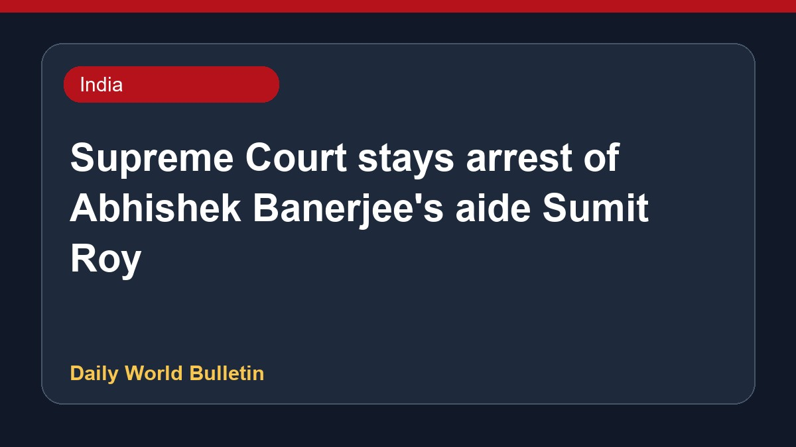

Supreme Court stays arrest of Abhishek Banerjee's aide Sumit Roy

The Supreme Court has granted interim protection from arrest to Sumit Roy, an aide of Trinamool Congress leader Abhishek Banerjee, in connection with a land-grabbing case in Salboni. The apex court directed him to cooperate with the ongoing investigation. Meanwhile, the Criminal Investigation Department had earlier conducted searches at the residence of the former aide with an arrest warrant as part of a land fraud probe, and subsequently took over the corruption cases against him.
Original source: India News Sources
Supreme Court Stays Arrest Of Abhishek Banerjee's Aide Sumit Roy In Salboni Land-grab case - Live Law ↗
Supreme Court Stays Arrest Of Abhishek Banerjee's Aide Sumit Roy In Salboni Land-grab case - Live Law ↗